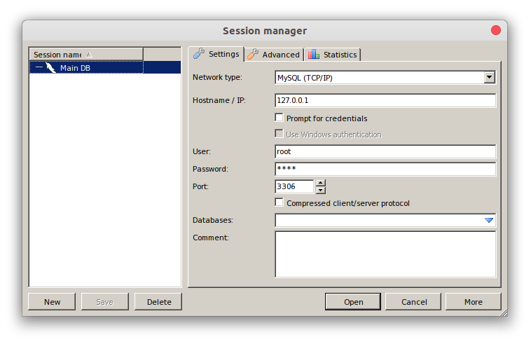
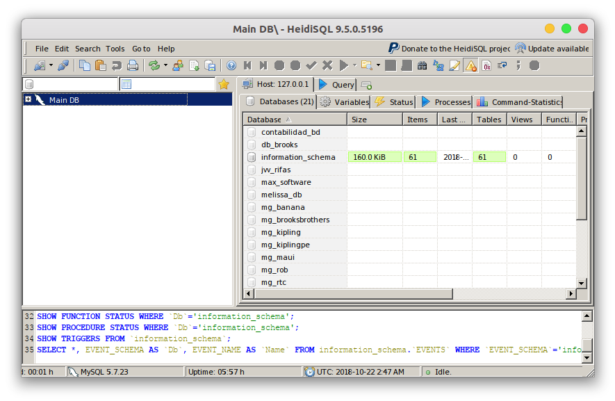

Para la realización completa y con éxito de este OVI es necesario XAMPP para no hacer instalación parte por parte de Apache, MySQL y PHP.
Descargando y usando los paquetes
Una vez finalizada la instalación de XAMPP procederemos a descargar e instalar HeidiSQL que es un gestor de base de datos, que estará conectada al MySQL que ofrece XAMPP.
Una vez finalizada la instalación de HeidiSQL tendremos lista nuestra paquetería inicial para el desarrollo del OVI.
HeidiSQL es un liviano pero potente gestor de bases de datos, el cual luce de la siguiente manera en la pantalla principal de login:

Una vez el usuario logre iniciar sesión en HeidiSQL, le aparecería la siguiente pantalla donde se ofrece un listado completo de todas las bases de datos que el usuario ha creado:
